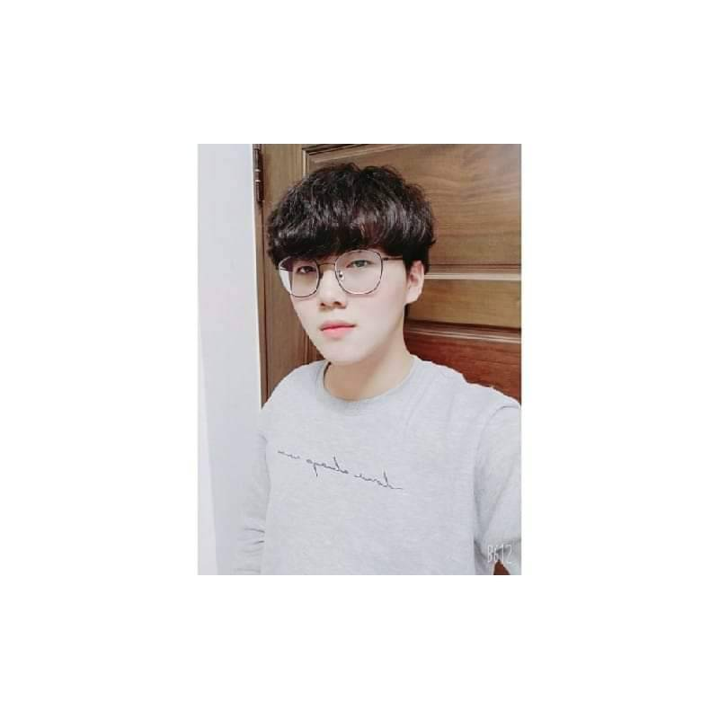

曾榮平
生日：92/08/06
星座：獅子座
血型：O
自我介紹
我的父親從事服務業做事寬容，給予我以何為貴的 觀念。則我的母親是從事補習班老師為人克盡己職，教 會了我持之以恆，有始有終的精神，家境小康，有個健 全的家庭令我深感幸福，大多時間和外公外婆住，但因此我才能懂得敬老尊賢。
我的個性見義勇為，容易相處，樂於幫助他 人，與同儕間相處融洽，獨學而無友，則孤陋寡聞，因 而在我成長的路途中，我喜與同儕互助合作，一起分享 成功的喜悅，面對事情時，無謂失敗的推擠，試圖力求 完成，且吃虧就是占便宜，施比受更有福嘛!所以能多 負擔一些，除了能視為磨練，亦是一種肯定的考驗。 猶記上學期，某次幫助老人的經驗讓一直以來只談理論 的我深切改變，體認到實踐的重要性，且受到父親影響， 我常在幫助他人中得到快樂且助人也成為我成長中不可或缺的一環。
興趣
打球對我而言是一種釋放的的管道，運動時帶給我的快樂能夠讓我忘記生活中的各種不論大小的煩惱。
當然我也跟大多數人一樣愛打電動，在忙碌之餘也得來點娛樂，玩遊戲能夠讓我沉浸在與他人的較量中，讓我進入一種忘我的狀態，對我而言這樣子的狀態能夠算是一種放鬆。
閱讀自己有興趣的書籍或是文章能夠從中感觸到書籍所表達的內容也是一種對心靈的釋放。